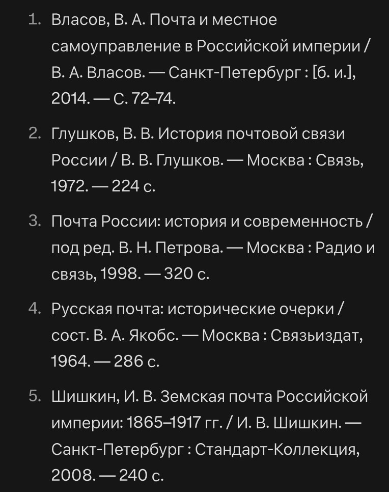
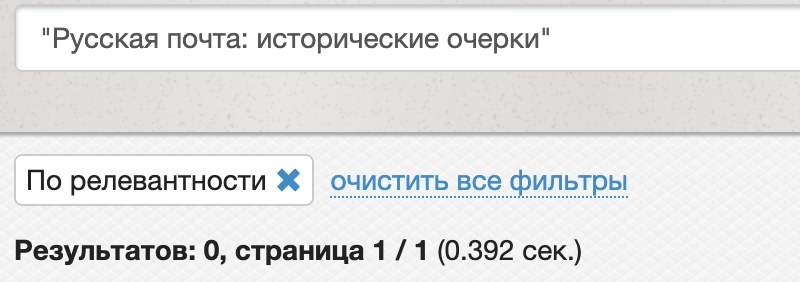
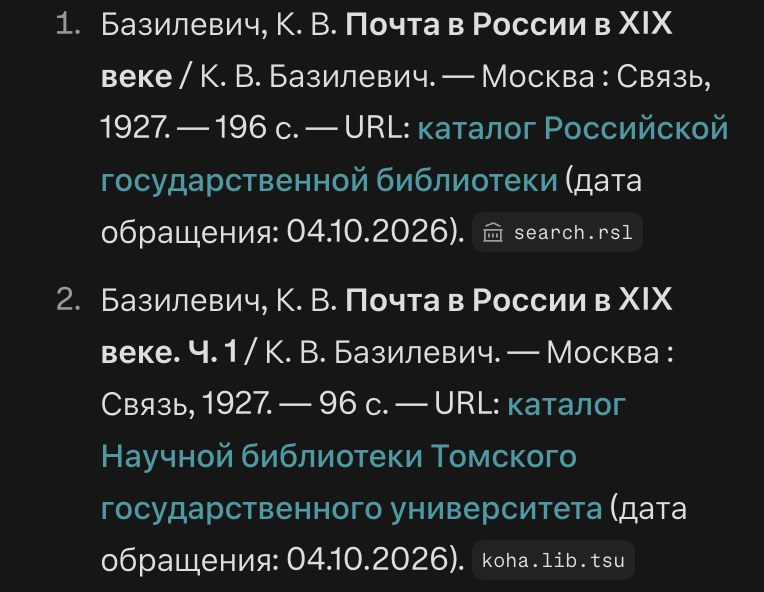

Бесплатные уроки · Perplexity
Соберёшь список литературы со ссылками и проверишь, что каждая книга существует.
Учитель просит к реферату список литературы — пять источников, по ГОСТу. Perplexity соберёт его за десять секунд и оформит как надо: тире, двоеточия, страницы. Подвох в том, что аккуратное оформление ничего не говорит о том, существует ли книга. Учимся получать список, где у каждой строки есть ссылка, и проверять его за пять минут.
Список литературы для реферата по [предмету], [8] класс, тема «[тема]». [5] источников на русском, оформи по ГОСТ. Бери только книги и статьи, которые нашёл по ссылке: у каждого источника — ссылка на его страницу в каталоге библиотеки, на КиберЛенинке или в электронной библиотеке. Нет ссылки — не включай, не придумывай.
Сначала мы спросили коротко, как спросил бы восьмиклассник: «Список литературы для реферата по истории, 8 класс, тема „Почта в Российской империи в XIX веке“. 5 источников на русском, оформи по ГОСТ». Через секунду — пять книг, оформленных без единой помарки:

Мы поискали каждую в каталоге Российской государственной библиотеки — главной библиотеки страны. Четырёх книг из пяти там нет: ни «Истории почтовой связи России» Глушкова, ни сборника под редакцией Петрова, ни «Русской почты» Якобса, ни «Земской почты» Шишкина.

Имена при этом взяты не с потолка: В. А. Якобс — настоящий автор книг о почтовых марках, «Стандарт-Коллекция» — настоящее издательство. Оттого список и выглядит убедительно.
Первая строка — склейка. У В. А. Власова есть статья «Почта и местное самоуправление в Российской империи» — в журнале, 2015 год, страницы 20–25. А «Санкт-Петербург, 2014, с. 72–74» — от другой его статьи, «Земство и война». Обе мы нашли в списке литературы Центрального музея связи. Perplexity соединил их в одну и оформил как книгу — такую в библиотеке не найдёшь.
Потом мы отправили запрос из урока. У каждой строки появилась ссылка: каталог РГБ, Президентская библиотека, КиберЛенинка. Мы открыли все — книги и статьи настоящие. Но и здесь нашлось что исправить:

В реферате вышло бы четыре источника вместо пяти. И «196 с.» — неверно: в каталоге РГБ вторая часть этой книги занимает страницы 97–176, значит, всего их 176.
А на популярную тему — «Влияние шума на здоровье человека» — все пять книг из короткой просьбы оказались настоящими: Perplexity взял их из ответа библиотекаря Донской публичной библиотеки на похожий вопрос. Чем реже тема, тем больше выдумки.
Каталог — search.rsl.ru. Название бери в кавычки — так ищется точная фраза. «Результатов: 0» у книги советских лет почти наверняка значит, что её не было.
Собери список литературы к своему реферату или докладу. Открой каждую ссылку, а книгу без ссылки найди в каталоге search.rsl.ru.
Урок рассчитан на сайт perplexity.ai; у нас были бесплатный план и режим «Поиск». Названия кнопок могут отличаться в приложении и после обновлений. Подписка на наше обучение не включает платные тарифы нейросетей.
Perplexity — запросы урока проверены 4 октября 2026, бесплатный план, режим «Поиск». Каждый источник сверен с каталогом Российской государственной библиотеки, Президентской библиотекой, КиберЛенинкой и списком литературы Центрального музея связи.
Следующий урок — «Новость о нейросети: можно ли мне?». Найдёшь первоисточник новости и узнаешь, кому, где и за сколько это доступно.
Читать следующий урокКак войти и что ещё умеет Perplexity — разбор на сайте. Все нейросети, которые открываются из России, — на одной странице.